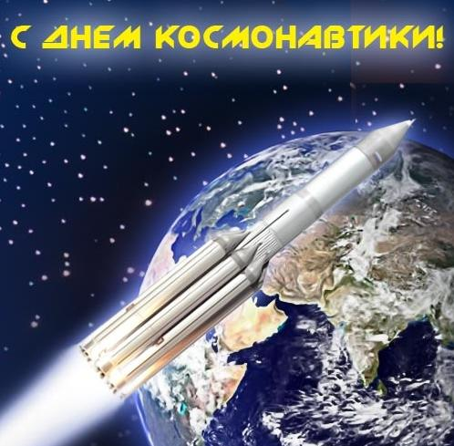
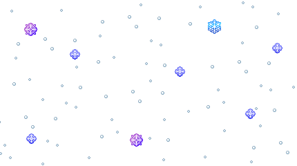

Назад тому полвека доказали,
Что лучше всех мы можем и хотим,
И пусть до нас туда и не летали,
Мы знали - в космос первыми летим!
Не потому ли, в этот день апреля
Планета поздравляет каждый год
Отчаянное космонавтов племя!
Всем авиации работникам - почёт!
Даже первобытный человек, В небо глядя по ночам мечтал, Чтоб скорей его пещерный век, Веком космонавтики бы стал. Вот минуло много сотен лет В космос не в диковинку полет, Но мечта о тысячах планет В головах романтиков живет. Мы же чествуем сегодня тех, Кто с полетом жизнь свою связал, Пусть во всем сопутствует успех С Днем вас космонавтики, друзья!

С дня первого полета человека,
К далеким, ярким звездам,
Ведем отсчет космического века,
Который был мечтателями создан.
Романтиков сегодня поздравляем,
Тех, что покорили неба синеву,
В День космонавтики им пожелаем,
Свою мечту увидеть наяву.